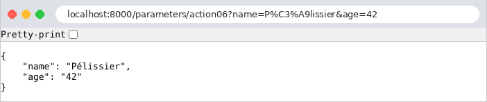

3. O modelo da action
Uma action precisa de informações enviadas pelo navegador: os parâmetros da URL ([?name=martin&age=42]), os campos de formulário, o corpo JSON da requisição e, às vezes, um cabeçalho HTTP da requisição. O curso original se refere a todas essas informações como o modelo da action. Este capítulo mostra como uma action do [Symfony] obtém essas informações, as converte para o tipo correto e as valida. Esse processo se chama data binding.
[Symfony] dá acesso às informações da requisição por meio do objeto [Request] (exemplo 05), na forma de strings, junto com alguns métodos de conversão. Ele também pode vincular essas informações aos parâmetros de uma action usando atributos ([#[MapQueryParameter]], [#[MapQueryString]], [#[MapRequestPayload]]) e validá-las usando seu componente Validator: descrevemos os dados esperados por meio de restrições (“obrigatório”, “um inteiro entre 0 e 150” etc.), escritas como atributos como em [PHP], e o validador verifica se os dados estão em conformidade com elas. Primeiro leremos os parâmetros manualmente (exemplo 07) e depois deixaremos o framework cuidar de sua conversão e validação (exemplos 08 a 12). No próximo capítulo, as mesmas restrições validarão os formulários HTML.
Observe a terminologia: no próximo capítulo, a palavra “modelo” se referirá principalmente aos dados que uma action passa à sua view. O modelo de uma action, como usado neste capítulo, é o que ela recebe.
Os exemplos 07 a 12 são executados da mesma forma que os do capítulo anterior: um terminal aberto na pasta do exemplo, [php -S localhost:8000 -t public]; [Ctrl-C] encerra o servidor. A maioria usa o listener [ReadableJson] do exemplo 03, resultando em um JSON legível. Comentaremos seus arquivos de configuração somente quando introduzirem algo novo.
3.1. Exemplo 07: Os parâmetros da URL
Os parâmetros da URL são a parte que segue o [?]: [?name=martin&age=42]. Essa parte é chamada de query string. Cada parâmetro é um par [name=value]; os pares são separados por [&]. O controller [ParametersController]:
- linha 22: a propriedade [query] da requisição contém os parâmetros da URL, em um “bag” de parâmetros (um objeto [InputBag]), cujo método [get] retorna o valor de um parâmetro — já decodificado — ou [null] se ele estiver ausente;
- linha 23: a action exibe o valor e seu tipo: a função [get_debug_type] retorna o nome do tipo de um valor. Um valor obtido da URL é sempre uma string ([string]). O operador [.] concatena a string interpolada e o tipo;
- Linha 32: o método [getInt] lê o parâmetro e o converte em um inteiro. Um parâmetro ausente retorna 0; um valor que não é um inteiro ([abc]) causa um erro 400 (Bad Request). Da mesma forma, existe [getBoolean] ([1], [true], [on] e [yes] são verdadeiros), [getString], [getAlpha] (somente letras), [getDigits] (somente números), [getEnum] (uma lista);
- linhas 41–51: um parâmetro obrigatório e uma conversão manual que distingue os dois erros possíveis. [throw new BadRequestHttpException(message)] encerra a operação com uma resposta 400, acompanhada da mensagem (veja o exemplo 03, que também lançou uma exceção 404). A função [filter_var] do [PHP], com o filtro [FILTER_VALIDATE_INT], retorna o inteiro contido na string, ou [false] se a string não for um inteiro;
- linha 58: o segundo parâmetro de [getInt] é um valor padrão, usado se o parâmetro estiver ausente. Esse é tipicamente o caso do número de página em uma lista;
- linha 67: não há obrigação de dar à variável [PHP] o mesmo nome do parâmetro da URL. Os mecanismos de busca costumam usar um parâmetro curto, [q] (query);
- linha 75: [all()] retorna todos os parâmetros da URL em um array associativo, que a action converte em JSON (veja o exemplo 03);
- linhas 81–85: a abordagem declarativa. O atributo [#[MapQueryParameter]], colocado antes de um parâmetro da action, vincula esse parâmetro ao parâmetro de mesmo nome na URL e o converte para o tipo declarado ([int]). Um parâmetro sem valor padrão é obrigatório: se estiver ausente ou não puder ser convertido, causa um erro 404 (a URL, tal como escrita, não corresponde a nenhuma página válida). Um valor padrão ([$page = 1]) o torna opcional. É isso que as linhas 41–51 fazem, em uma única linha.
Vamos testar cada action com o [curl]. Primeiro com o parâmetro presente e depois ausente:
As aspas em torno da URL são necessárias em um terminal: sem elas, o shell interpretaria [&] (que executa um comando em segundo plano no [Linux]) e [?]. O valor [null], quando inserido em uma string, torna-se uma string vazia. Um valor que contém espaços ou caracteres especiais deve ser codificado na URL: um espaço se torna [%20], e [&] se torna [%26] (caso contrário, separaria dois parâmetros). O navegador faz isso automaticamente; com o [curl], é preciso escrevê-lo explicitamente. [PHP] decodifica o valor antes que a action o leia:
Conversão por meio de [getInt] — bem-sucedida, com falha e depois sem parâmetros:
O [Symfony] se recusa a converter [abc] em um inteiro: trata-se de um erro do cliente, daí o código 400 (“Input value 'age' cannot be converted to 'int'”). Já um parâmetro ausente retorna 0 silenciosamente: a action não consegue distinguir esse caso de uma idade 0 realmente informada. O parâmetro obrigatório da action 03 está ausente e, portanto, é inválido. Solicitamos uma resposta JSON (cabeçalho [Accept], veja o exemplo 03), que contém a mensagem da exceção:
(Esse JSON compacto não é reformatado pelo nosso listener, veja o exemplo 03). Em um navegador, no modo de depuração, uma resposta 400 exibe a página de erro do [Symfony], com a mensagem:

O valor padrão e o parâmetro renomeado:
Todos os parâmetros de uma vez. O parâmetro [name] aparece duas vezes:
O parâmetro [name] retém apenas seu último valor: essa é uma regra do [PHP], que veremos novamente no exemplo 10. A idade permaneceu uma string (["42"], entre aspas no JSON): nenhuma conversão foi solicitada. Em um navegador (aqui, o [Chromium]), o JSON é exibido exatamente como o servidor o formatou; a caixa de seleção “Pretty-print” o indentaria se ele ainda não estivesse indentado. A barra de endereços também mostra a codificação dos caracteres acentuados na URL ([é] torna-se [%C3%A9], com seus dois bytes em [UTF-8]):

Por fim, a vinculação por meio de [#[MapQueryParameter]], com e sem o parâmetro opcional e, depois, com uma idade inválida:
Sem o parâmetro [age], a mensagem seria “Missing query parameter 'age'”. O código 404 pode surpreender: o atributo aceita um parâmetro [validationFailedStatusCode], que permite escolher outro ([#[MapQueryParameter(validationFailedStatusCode: 400)]]).
Este primeiro exemplo ilustra os limites da abordagem manual: para cada parâmetro, é preciso escrever a leitura, a conversão e o tratamento de valores ausentes e de erros. Com dez parâmetros, o código da action ficaria sufocado por essas verificações. [#[MapQueryParameter]] simplifica a conversão, mas nada diz sobre as regras (“uma string de 2 a 20 caracteres”). É melhor descrever o que se espera e deixar o framework verificar. É o objetivo do exemplo seguinte.
3.2. Exemplo 08: Um modelo de action descrito por uma classe
O modelo de uma action pode ser descrito por uma classe: uma propriedade por parâmetro esperado, com seu tipo e — na forma de atributos — as restrições que ele deve satisfazer. O [Symfony] então cria o objeto por conta própria a partir da requisição, o valida e o passa à action. As restrições são classes do componente Validator: [NotBlank] (obrigatório), [Length] (um comprimento), [Range] (um intervalo), [Choice] (uma lista de valores), [Email], [Regex]... [Symfony] fornece mais de setenta delas.
3.2.1. O modelo: src/Model/PersonModel.php
- Linha 7: importação do namespace das restrições, sob o nome curto [Assert]: as restrições serão escritas como [Assert\NotBlank], [Assert\Length]... Essa é a prática padrão em todos os projetos [Symfony];
- linhas 9–31: uma classe imutável cujas propriedades são inicializadas pelo construtor (exemplo 03). Cada propriedade tem um valor padrão, [null], e um tipo anulável ([?string], [?int]: uma string ou [null]): se um parâmetro estiver ausente da URL, a propriedade assume o padrão [null], e uma restrição determina se ele era obrigatório. Essa é a forma padrão de escrever essas classes;
- Linhas 14–18: o nome é obrigatório ([NotBlank] rejeita [null] e uma string vazia) e deve ter de 2 a 20 caracteres ([Length]). A restrição [Sequentially] verifica as restrições que contém em ordem e para na primeira que falhar: um nome vazio produz apenas um erro, não dois. Os parâmetros das restrições são nomeados ([min: 2]), um requisito desde o [Symfony] 8;
- linhas 20–22: a idade é obrigatória ([NotNull]) e deve estar entre 0 e 150 ([Range]). Seu tipo é [?int]: o [Symfony] converterá a string da URL em um inteiro;
- linhas 24–26: o título é obrigatório e deve ser um dos três valores listados ([Choice]);
- linhas 28–29: o endereço de e-mail é opcional (sem a restrição [NotBlank]); se informado, deve ser válido. Com exceção de uma restrição, [NotBlank], as demais aceitam [null]: elas só verificam os valores presentes.
Este modelo descreve os dados esperados; não contém nenhuma instrução de validação. Isso é conhecido como estilo declarativo.
3.2.2. A action: src/Controller/PersonsController.php
- Linha 21: o atributo [#[MapQueryString]] instrui o [Symfony] a construir o parâmetro [$person] a partir dos parâmetros da URL. Um resolvedor de argumentos (exemplo 05) realiza essa tarefa em duas etapas. Primeiro, ele converte: usando o Serializer, cria um objeto [PersonModel], em que cada propriedade recebe o parâmetro da URL de mesmo nome, convertido para o tipo correspondente. Em seguida, ele valida o objeto: verifica cada restrição de cada propriedade. Se tudo estiver correto, a action é chamada. Caso contrário, ele lança uma exceção (uma [HttpException] com código 404, que contém uma [ValidationFailedException], que por sua vez contém a lista de todos os erros, e não apenas o primeiro), e a action nunca é chamada: ela, portanto, não precisa se preocupar com dados inválidos;
- linhas 23–27: a action retorna os parâmetros recebidos como estão, seguidos do objeto [PersonModel] e do tipo da idade, para ilustrar a diferença.
Quem trata a exceção? Por padrão, o próprio [Symfony] , por meio de uma resposta de erro 404 (ou 422, para [#[MapRequestPayload]], exemplo 11): sua página de erro ou, para um cliente que solicita JSON, um documento detalhando os erros. Aqui, queremos uma resposta de erro em JSON, em todos os casos, com código de status 400 e em nosso próprio formato. Esse é o papel de um listener.
3.2.3. Tratamento de erros: src/EventListener/ValidationErrors.php
- Linha 15: um listener do evento [kernel.exception] (a constante [KernelEvents::EXCEPTION]). [Symfony] dispara esse evento quando ocorre uma exceção durante a action ou durante a preparação de seus parâmetros, antes que a action gere sua própria resposta de erro. Declarado dessa forma, o listener se aplica a todas as actions da aplicação: toda action que valida um modelo se beneficia dele, sem precisar escrever uma única linha de código de tratamento de erros;
- Linha 22: o evento, um objeto [ExceptionEvent], carrega a exceção ([getThrowable()]). A exceção lançada por [#[MapQueryString]] é uma exceção HTTP; [getPrevious()] retorna a exceção que a causou — a exceção de validação;
- linhas 23–25: se não for um erro de validação, o listener não faz nada: o [Symfony] tratará a exceção como de costume. O operador [!] (não) inverte a condição;
- linhas 26–29: [getViolations()] retorna a lista de erros, chamados (de restrição) violações. Cada violação tem um caminho ([getPropertyPath()], o nome da propriedade com erro) e uma mensagem. [$errors[] = ...] adiciona um elemento ao final do array [$errors];
- Linha 31: [setResponse] fornece uma resposta ao evento: uma resposta JSON, com código de status 400. O [Symfony] a envia no lugar de sua página de erro (e, como qualquer resposta, ela passa pelo listener [ReadableJson]).
3.2.4. Execução
Um modelo válido:
Os parâmetros recebidos são strings; o objeto [PersonModel] contém a idade como inteiro (sem aspas no JSON), e o endereço ausente é [null]. Um nome cercado por espaços ([%20]) e um endereço presente:
Os espaços ao redor do nome foram preservados: o [Symfony] não transforma os dados recebidos. Uma restrição pode ignorá-los durante a validação ([new Assert\Length(min: 2, normalizer: 'trim')]), mas o valor continua sendo o que foi enviado. No próximo capítulo, o componente Form removerá esses espaços. Nenhum parâmetro neste momento: os três campos obrigatórios estão ausentes.
Quatro campos inválidos de uma só vez:
Todos os erros são relatados de uma vez, permitindo que o usuário corrija tudo de uma só vez. Por fim, uma idade que não é um número:
Desta vez, apenas um erro é relatado, embora o nome, o título e o endereço continuem inválidos. Isso resulta do processo em duas etapas realizado por [#[MapQueryString]]: a conversão falhou ([abc] não pode ser convertido em inteiro), de modo que o objeto não pôde ser construído, e a validação — que verifica o objeto — não ocorreu. As mensagens estão em inglês, o idioma padrão do [Symfony]. O exemplo seguinte personaliza algumas delas.
3.3. Exemplo 09: Validação feita pela action
No exemplo 08, um modelo inválido interrompe a action, e o listener da aplicação responde. Isso é conveniente para uma API, cujos clientes são programas que esperam uma resposta de erro padronizada. Mas uma página web costuma preferir exibir novamente o formulário com mensagens de erro: nesse caso, a action deve decidir o que fazer com um modelo inválido. Ela chama o validador por conta própria.
3.3.1. O modelo: src/Model/PersonInput.php
Desta vez, o modelo descreve a entrada exatamente como é recebida: strings, que a action copiará para o próprio objeto. Suas propriedades são, portanto, comuns (nem promovidas nem [readonly]), e todas do tipo [?string], inclusive a idade:
- linhas 19–24: a idade é uma string, que deve estar presente ([NotBlank]), conter apenas dígitos ([Type('digit')], que verifica se uma string contém apenas dígitos) e cujo valor deve estar entre 0 e 150 ([Range] aceita uma string que representa um número). Graças ao [Sequentially], uma idade [abc] é relatada apenas uma vez. O parâmetro [message] substitui a mensagem da restrição pela nossa: cada restrição tem esse parâmetro (ou vários, quando tem múltiplos tipos de erro, como [minMessage] e [maxMessage] para [Length]);
- as demais propriedades têm as restrições do exemplo 08.
3.3.2. Mensagens personalizadas
As mensagens de erro do validador são escritas em inglês em seu código, mas passam pelo [Symfony] tradutor (o componente Translation), que as traduz para o idioma da requisição. O [Symfony] vem com traduções de suas mensagens em cerca de sessenta idiomas: basta selecionar o idioma da aplicação e habilitar o tradutor em [config/packages/framework.yaml]:
- linha 5: o idioma padrão da aplicação (locale). Esse também é o idioma de cada requisição, a menos que a aplicação o altere (veja o capítulo sobre internacionalização);
- linhas 7–8: o tradutor, cujos dicionários específicos da aplicação ficam na pasta [translations]. [%kernel.project_dir%] é um parâmetro do contêiner: a pasta do projeto (exemplo 01).
As mensagens traduzidas pelo [Symfony] nem sempre são apropriadas. A aplicação pode fornecer suas próprias traduções, que têm precedência. As mensagens de validação ficam no [validators] domínio; as traduções em inglês para esse domínio ficam no arquivo [translations/validators.en.yaml] (o nome de um dicionário é composto pelo domínio, pelo idioma e pelo formato):
Um dicionário associa cada chave à sua tradução. Para as mensagens do validador, a chave é a mensagem original em inglês: ['This value should not be blank.'] será exibida como “the field is required.” As chaves estão entre aspas simples porque contêm caracteres (pontos, espaços) que têm significado específico em [YAML]. As mensagens não traduzidas por esse arquivo mantêm a tradução do [Symfony] (o arquivo [vendor/symfony/validator/Resources/translations/validators.en.xlf]), e uma mensagem não reconhecida por nenhum dicionário é exibida como está: é o caso da nossa mensagem “an integer is expected.”
3.3.3. A action: src/Controller/PersonsController.php
- linha 17: o validador, um serviço do [Symfony] (do tipo [ValidatorInterface]), é injetado na action como um serviço da aplicação (exemplo 06);
- Linhas 20–24: a action cria o objeto e copia nele os parâmetros da URL. Poderíamos, como no exemplo 08, deixar que [#[MapQueryString]] construísse o objeto; contudo, [#[MapQueryString]] o valida imediatamente e encerra a action em caso de erro — exatamente o que queremos evitar aqui;
- Linha 26: [validate] verifica as restrições do objeto e retorna uma lista de violações (um objeto [ConstraintViolationList], que é percorrido como um array e cujo tamanho é retornado por [count]). A validação não lança nenhuma exceção: a própria action decide o que fazer em seguida;
- linhas 27–33: os erros, campo a campo, cada um dentro de uma tag [<li>]. Em uma string entre aspas, [{$error->getMessage()}] insere o resultado de uma chamada de método (as chaves delimitam a expressão). O operador [.=] acrescenta uma string ao final de outra;
- linhas 36–37: em caso de sucesso, uma mensagem de boas-vindas. O nome passa pela função [htmlspecialchars] do [PHP], que substitui os caracteres que têm significado em HTML ([<], [>], [&], ["], [']) por suas entidades ([<], [>]...): elas serão exibidas como estão, em vez de interpretadas. Sem essa precaução, um usuário poderia digitar um “nome” contendo HTML, ou até mesmo [JavaScript], que seria executado no navegador de qualquer pessoa que visse a página. Essa é a vulnerabilidade de segurança mais comum na web: a injeção de script (XSS, cross-site scripting). Os campos de título e idade não exigem essa proteção: seus valores foram validados por restrições (um de três valores permitidos, todos numéricos). No próximo capítulo, a engine de views [Twig] fará esse escape automaticamente para qualquer valor inserido em uma página.
Uma entrada válida, seguida de uma entrada com quatro erros:


As mensagens estão em inglês: as do [Symfony] (nome, endereço), a nossa (idade) e a do nosso dicionário (título). A resposta bruta à segunda consulta — a de um nome contendo HTML — e a resposta a uma consulta sem nome, com uma idade muito alta:
O nome [<b>martin</b>] (codificado como [%3Cb%3E...] na URL) é exibido como está, sem ficar em negrito: suas tags foram neutralizadas. Observe que a resposta desta vez tem código de status 200: foi a action que decidiu retornar uma página normal contendo os erros.
3.4. Exemplo 10: Parâmetros múltiplos
O mesmo parâmetro pode aparecer várias vezes em uma URL: [?color=red&color=green]. É isso que um navegador envia para um grupo de caixas de seleção com o mesmo nome ou para uma lista de seleção múltipla (veja o próximo capítulo). [PHP] trata esse caso à sua maneira. O controller [ArraysController]:
- Linhas 21–22: para o [PHP], os parâmetros da URL formam um array associativo, em que cada chave tem apenas um valor: um parâmetro repetido substitui o anterior, e somente o último valor é mantido. A action também retorna, para comparação, a string bruta de parâmetros como enviada pelo navegador: a propriedade [server] da requisição contém as variáveis que o servidor web transmite ao [PHP], incluindo [QUERY_STRING];
- linhas 28–33: para obter todos os valores, o nome do parâmetro deve terminar com colchetes: [?color[]=red&color[]=green]. O [PHP] então armazena os valores em um array, o valor do parâmetro [color]. O método [all], quando recebe o nome de um parâmetro, retorna esse parâmetro como um array — vazio se o parâmetro estiver ausente;
- linhas 37–53: o array é validado. O método [validate] do validador aceita qualquer valor, desde que suas restrições sejam especificadas: aqui, [Count(min: 1)] (um array com pelo menos um elemento) e [All], que aplica as restrições que contém a cada elemento do array: cada um deve ser uma das três cores;
- linha 50: o caminho da violação identifica o elemento problemático: [[1]] para o segundo elemento (os índices começam em 0) e uma string vazia para o próprio array. Isso é anexado ao nome do parâmetro;
- linha 52: o operador [!] resulta em [true] para um array vazio, que é avaliado como “falso” em uma condição.
O arquivo [translations/validators.en.yaml] do exemplo traduz a mensagem da restrição [Choice] (exemplo 09). Os resultados:
A opção [-g] do [curl] impede que ele interprete por conta própria os colchetes da URL. Um navegador, por outro lado, os codifica ([color%5B%5D=red]), o que o [PHP] também entende. Quanto ao HTML, basta nomear as caixas de seleção de um grupo como [color[]] (o componente Form do [Symfony] fará isso por nós; veja o exemplo 18). Essa regra se aplica especificamente ao [PHP]: os frameworks de outras linguagens ([Flask], [Spring MVC], [ASP.NET Core]) mantêm todos os valores de um parâmetro repetido, sem colchetes.
O [Symfony] garante que as duas formas não sejam confundidas: [get] rejeita um parâmetro que é um array, e [all] rejeita um parâmetro que não é um array. Em ambos os casos, um erro 400 é retornado:
A validação é bem-sucedida, depois falha por causa de uma cor desconhecida e, por fim, por causa de uma lista vazia:
O erro sobre a cor desconhecida se refere a [color[1]]: o parâmetro e o índice do elemento problemático no array.
3.5. Exemplo 11: Os parâmetros de uma requisição POST
Os exemplos anteriores usaram requisições GET, cujos parâmetros estão contidos na URL. Uma requisição POST transporta seus dados em seu corpo, em duas formas principais:
- campos de um formulário HTML: o corpo tem a mesma sintaxe de uma query string ([name=martin&age=42]), e seu tipo (cabeçalho [Content-Type]) é [application/x-www-form-urlencoded];
- um documento JSON, enviado por um programa ([JavaScript] em uma página, cliente de uma API...): o tipo é [application/json].
O controller [PostController]:
- linha 17: todas as rotas do controller aceitam apenas o método POST;
- Linha 26: o cabeçalho de requisição [Content-Type];
- linha 27: a propriedade [request] da requisição (o nome, “history”, é enganoso) contém os parâmetros do corpo — para um corpo de formulário — em um bag de parâmetros semelhante a [query] (exemplo 07): [get], [getInt], [all]... Os campos de um formulário seguem as regras do exemplo 10: um campo repetido deve ter um nome terminado em [[]];
- linhas 36–38: [getContentTypeFormat()] especifica o formato do corpo, derivado do cabeçalho [Content-Type]: [json], [form], [xml]... Um corpo que não é declarado como JSON é rejeitado com o erro 415 (Unsupported Media Type);
- linhas 39–43: [toArray()] desserializa o corpo JSON: o texto JSON se torna um array [PHP]. Um JSON malformado lança uma exceção [JsonException] (do componente HttpFoundation, importado na linha 7), que o bloco [try] / [catch] intercepta para responder com um erro 400 contendo nossa mensagem. Sem esse bloco, o [Symfony] responderia por conta própria com um erro 400: essa exceção é uma das que ele reconhece como erros do cliente;
- linhas 44–45: o método [getPayload()] retorna os parâmetros do corpo — seja um formulário ou um documento JSON — em um bag de parâmetros. Esse é o método mais usado, pois não depende da forma da requisição;
- linha 53: um campo de formulário, lido por [getPayload()];
- linhas 59–63: o atributo [#[MapRequestPayload]] é o equivalente, para o corpo da requisição, de [#[MapQueryString]] (exemplo 08): ele constrói um objeto [PersonModel] (a classe do exemplo 08) a partir dos campos do formulário ou do documento JSON, e o valida. Um modelo inválido lança uma exceção (com código 422, Unprocessable Content, neste caso), que o listener [ValidationErrors] do exemplo 08 converte em uma resposta 400. O exemplo também usa a configuração e o dicionário do exemplo 09: as mensagens estarão em inglês, com nossas próprias traduções.
O [Symfony] não exige mais nada para aceitar requisições POST: ele não tem nenhuma proteção anti-CSRF que se aplique a todas as requisições (exemplo 02). Com o [curl], a opção [-d] (data) envia um corpo; a requisição então se torna uma requisição POST, do tipo [application/x-www-form-urlencoded], a menos que a opção [-H] (header) especifique outro tipo. A opção [-X POST] define explicitamente o método (aqui ela é opcional). Os campos de um formulário, incluindo um campo repetido:
Um corpo JSON, que contém um inteiro e um array:
As aspas do JSON são precedidas por [\] para evitar que a string do comando termine; no [Linux] e no [macOS], também é possível colocar o JSON entre apóstrofos: [-d '{"name": "martin"}']. Diferentemente dos campos de formulário, o JSON carrega tipos de dados: a idade já é um inteiro. Um corpo que não é JSON, seguido de um JSON malformado (solicitando uma resposta JSON para ver a mensagem):
Um único campo e, depois, a mesma URL solicitada como GET:
A URL existe, mas não para o método GET: o [Symfony] retorna uma resposta 405 (Method Not Allowed), e seu cabeçalho [Allow] lista os métodos aceitos (exemplo 02). Por fim, o modelo vinculado ao corpo da requisição — primeiro por meio de um formulário válido, depois de um inválido e, por fim, de um documento JSON:
A última requisição mostra uma diferença entre os dois formatos de corpo. Os campos de formulário são sempre strings: o [Symfony] converte, portanto, a string ["42"] em um inteiro. Um documento JSON, por outro lado, tem tipos de dados: se o cliente envia uma string (["42"], entre aspas) onde a classe espera um inteiro, isso é um erro de tipo, que o [Symfony] relata sem tentar converter ([int|null] é o tipo [?int] da propriedade, escrito de outra forma).
3.6. Exemplo 12: Vinculação e validação personalizadas
Os tipos, atributos e restrições padrão nem sempre bastam. Este exemplo mostra três formas de estender a vinculação e a validação:
- um resolvedor de argumentos “personalizado”: uma data em formato francês, [23-09-2026], situada no caminho da URL, fornecida à action como um objeto;
- um listener que fornece à action um parâmetro que não vem da URL, mas de um cabeçalho HTTP;
- uma restrição de validação personalizada (sem espaços) e a conversão de uma data [dd/mm/yyyy].
3.6.1. Um objeto vinculado a um parâmetro de rota: DayFr.php e DayFrResolver.php
Vimos que os parâmetros de uma action são fornecidos por resolvedores de argumentos (exemplo 05): um fornece os parâmetros de rota (exemplo 02), outro a requisição (exemplo 05), outro os serviços (exemplo 06) e outros ainda os parâmetros da URL ([#[MapQueryParameter]]) ou um modelo ([#[MapQueryString]]). O [Symfony] tem cerca de quinze deles, incluindo um para datas ([#[MapDateTime]]) e um para enumerações. A aplicação pode escrever os seus. Escreveremos um para uma data em formato francês, representada pela classe [DayFr]:
- linha 9: uma classe imutável que implementa a interface [Stringable] do [PHP]: seus objetos podem ser convertidos em string por meio de seu método [__toString];
- linha 11: a data, um objeto [DateTimeImmutable] (a classe de datas do [PHP]; a versão [Immutable] cria um novo objeto a cada modificação — [$date->modify('+1 day')] retorna uma nova data — em vez de modificar o objeto);
- linhas 16–26: um método estático que cria um objeto [DayFr] a partir do texto do caminho, ou retorna [null] se o texto for inválido ([?self]: um objeto da classe atual ou [null]). [DateTimeImmutable::createFromFormat] interpreta uma string de acordo com um formato específico: [d] para o dia, [m] para o mês e [Y] para o ano com quatro dígitos; o [!] inicial zera a hora. [createFromFormat] é tolerante: aceita [31-02-2026] e o interpreta como 3 de março. A validação da linha 22 rejeita esse caso: a data, reformatada por [format], deve corresponder exatamente ao texto recebido;
- Linhas 29–32: a operação inversa: o objeto se torna o texto do caminho. O [Symfony] usará isso para criar uma URL a partir de um objeto [DayFr].
O resolvedor:
- Linha 12: um resolvedor de argumentos implementa a interface [ValueResolverInterface], cujo único método é [resolve];
- Linha 16: [resolve] recebe a requisição e a descrição do parâmetro da action (um objeto [ArgumentMetadata]: seu nome, tipo, valor padrão e atributos). Ele retorna o valor do parâmetro em um array ([iterable]) ou um array vazio se não tiver nada a retornar;
- Linha 19: os parâmetros de rota ficam armazenados nos atributos da requisição ([$request->attributes]), um conjunto de parâmetros que também contém informações calculadas pelo [Symfony] (o nome da rota, [_route], por exemplo). Procuramos o parâmetro com o mesmo nome da action;
- linha 24: o objeto [DayFr] ou, se o texto não corresponder a uma data, um erro 404: a URL não corresponde a nada. O operador [??] retorna seu operando à esquerda se ele não for [null], e o operando à direita caso contrário; aceita uma expressão [throw] à direita.
A classe é um serviço, como todas as da pasta [src] (exemplo 02): o [Symfony] a reconhece como um resolvedor de argumentos graças à sua interface ([autoconfigure]). O controller especificará qual parâmetro ela deve fornecer.
3.6.2. Um parâmetro fornecido por um listener: src/Binding/DetectLanguage.php
Para fornecer a uma action uma informação calculada a partir da requisição, também é possível fazer com que um listener a calcule (exemplo 03) e a inclua na requisição antes da action:
- linha 11: um listener do evento [kernel.request], disparado quando a requisição chega, antes da chamada da action (o próprio roteamento é um listener desse evento: o capítulo sobre o ciclo de vida tratará de sua ordem);
- linha 19: o cabeçalho [Accept-Language] da requisição especifica os idiomas do usuário, em ordem de preferência: [fr-FR,fr;q=0.9,en;q=0.8] (o coeficiente [q] mede a preferência, em uma escala de 0 a 1). [getPreferredLanguage] seleciona o idioma preferido do usuário entre os oferecidos pela aplicação; se não houver cabeçalho, assume o primeiro idioma da lista;
- linha 22: o idioma é armazenado nos atributos da requisição com o nome [language], ao lado dos parâmetros de rota.
O listener é executado para todas as requisições. O [Symfony] não tem o equivalente aos middlewares de rota encontrados em outros frameworks: um listener que deve atuar apenas em certas rotas verifica ele mesmo o nome da rota ([$request->attributes->get('_route')]). Quanto à action, ela receberá a informação sem fazer nada de especial (veja o controller).
3.6.3. Uma restrição “personalizada” e uma conversão: NoSpace.php e SearchModel.php
Uma restrição “personalizada” é escrita como duas classes: a restrição em si, que a descreve (suas opções, sua mensagem), e seu validador, que a verifica.
- linha 11: o atributo [#[Attribute]] do [PHP] permite que a classe seja usada como atributo, aqui em uma propriedade ([TARGET_PROPERTY]);
- linha 12: uma restrição herda da classe [Constraint];
- linha 14: sua mensagem de erro, em uma propriedade pública: ela pode ser alterada em tempo de execução ([#[NoSpace(message: '...')]]).
- linha 9: o validador de uma restrição tem o nome de sua classe, seguido de [Validator]: é assim que o [Symfony] o localiza. Ele herda de [ConstraintValidator];
- Linhas 11–18: seu método [validate] recebe o valor a validar e a restrição. [str_contains] verifica a presença de um texto em uma string; [(string)] converte o valor em string. Se o valor for inválido, uma violação é relatada ao contexto de validação ([$this->context]), junto com a mensagem da restrição. O tipo [mixed] refere-se a qualquer tipo. Como as restrições do [Symfony], esta aceita [null]: a ausência de valor é tratada por [NotBlank].
A restrição é usada pelo modelo de busca:
- linhas 14–15: nossa restrição, usada exatamente como qualquer outra;
- linhas 17–18: a restrição [DateTime] verifica se o valor é uma data no formato especificado ([d/m/Y]: dd/mm/aaaa) e se essa data existe. Sua mensagem é substituída pela nossa; o marcador [{{ value }}] será substituído pelo valor recebido (entre aspas). A data continua sendo uma string no modelo: uma propriedade do tipo [DateTimeImmutable] seria convertida pelo Serializer, mas uma data inválida causaria então um erro de conversão (exemplo 08), com uma mensagem de erro bastante vaga;
- Linhas 23–27: a conversão da data, em um método do modelo: o objeto [DateTimeImmutable] correspondente, ou [null] se a data estiver ausente. A ação chama esse método somente após a validação: a data é, portanto, necessariamente válida.
Por fim, a resposta a uma validação que falhou. Queremos que ela seja diferente da resposta do Exemplo 08: a primeira mensagem de erro, em texto simples, com o código 400:
Este é o listener do Exemplo 08, reduzido ao essencial: [getViolations()[0]] é a primeira violação. Um listener como esse se aplica a toda a aplicação. Para fornecer uma resposta diferente conforme a ação, ele verificaria o nome da rota (veja acima).
3.6.4. O controller: src/Controller/ExamplesController.php
- Linha 20: a rota do calendário, cujo parâmetro [{day}] é restringido por uma expressão regular: [[0-9]] denota um dígito, [{2}] denota a repetição do padrão anterior: dois dígitos, um hífen, dois dígitos, um hífen, quatro dígitos. Um segmento de caminho com formato diferente não corresponde à rota (404), sem que nosso resolver sequer seja consultado;
- linha 21: o atributo [#[ValueResolver]] atribui o parâmetro [$day] a um resolver, identificado por sua classe: somente ele fornecerá o valor. Sem esse atributo, o [Symfony] tentaria seus resolvers por ordem de prioridade, e o resolver de parâmetros de rota, que tem precedência sobre o nosso, forneceria a string ["23-09-2026"] a um parâmetro do tipo [DayFr]: um erro;
- linhas 25–26: a data é exibida no formato internacional ([Y-m-d]: [2026-09-23]). O método [generateUrl] de [AbstractController] cria a URL de uma rota nomeada, com seus parâmetros (é o que [redirectToRoute] fazia, exemplo 04). Ele recebe o próprio objeto [DayFr]: o [Symfony] o converte em string por meio de seu método [__toString]. A URL é relativa ao site ([/examples/...]); um terceiro parâmetro exigiria uma URL absoluta;
- linhas 31–35: o parâmetro [$language] não corresponde a nenhum parâmetro de rota. No entanto, o resolver de parâmetros de rota geralmente procura um atributo da requisição com o mesmo nome do parâmetro: ele encontra, portanto, o que o listener [DetectLanguage] armazenou ali. Só isso: nenhum atributo é necessário no parâmetro;
- Linhas 38–43: o modelo de busca, vinculado aos parâmetros da URL e validado (exemplo 08). A ação aceita apenas modelos válidos; ela chama o método de conversão da data. O [?->] operador (nullsafe) chama um método se o objeto não for [null] e retorna [null] caso contrário.
3.6.5. Execução
O objeto associado ao parâmetro de rota:
A data é exibida no formato internacional, mas a URL gerada por [generateUrl] voltou ao formato francês. 31 de fevereiro não existe: 404, com uma mensagem do nosso resolver. Uma data no formato internacional, [2026-09-23], não corresponde ao padrão descrito pela expressão regular: também 404, mas desta vez porque nenhuma rota corresponde.
O listener. A opção [-H] do [curl] define o cabeçalho [Accept-Language]:
Sem o cabeçalho [Accept-Language] ([curl] não envia nenhum), é o primeiro idioma da lista. O capítulo sobre internacionalização voltará a esse assunto, com o usuário selecionando o idioma.
A restrição “própria” e a conversão da data:
Sem nenhum parâmetro, [#[MapQueryString]] constrói um modelo vazio, que é válido: suas duas propriedades são opcionais.
3.6.6. Conclusão
Vamos resumir os métodos de que uma ação dispõe para obter seu modelo:
Parâmetros de rota | os parâmetros da ação, com os mesmos nomes; convertidos pelo seu tipo ([int $id]), restringidos por [requirements]; vinculados a um objeto por meio de um argument resolver ([ValueResolverInterface], [#[ValueResolver]]) |
Parâmetros da URL | [$request->query->get(...)], [getInt], [all]...; [#[MapQueryParameter]]; um parâmetro repetido é escrito como [name[]] |
Campos de um formulário POST | [$request->request->get(...)], ou [$request->getPayload()->get(...)], que também lê JSON |
JSON no corpo | [$request->toArray()], [$request->getPayload()] |
Modelo descrito por uma classe | [#[MapQueryString]] (URL), [#[MapRequestPayload]] (o corpo): conversão e depois validação |
Cabeçalhos | [$request->headers->get(...)], e métodos que os analisam, como [getPreferredLanguage] |
Validação | restrições ([#[Assert\...]]), verificadas antes da ação ([#[MapQueryString]]...) ou durante a ação ([ValidatorInterface]); restrições “personalizadas” ([Constraint] e [ConstraintValidator]) |
Mensagens | o idioma [default_locale], o tradutor e os dicionários [translations/validators.xx.yaml] de traduções |
Erros comuns | um event listener para [kernel.exception] |
Parâmetro calculado | um event listener [kernel.request], que armazena informações nos atributos da requisição |
Os formulários HTML, por outro lado, exigem mais do que apenas validação: eles precisam ser exibidos, reexibidos com a entrada do usuário e os eventuais erros, e protegidos contra requisições forjadas. [Symfony] delega tudo isso ao seu componente Form. Esse é o assunto do próximo capítulo, depois que as views forem apresentadas.